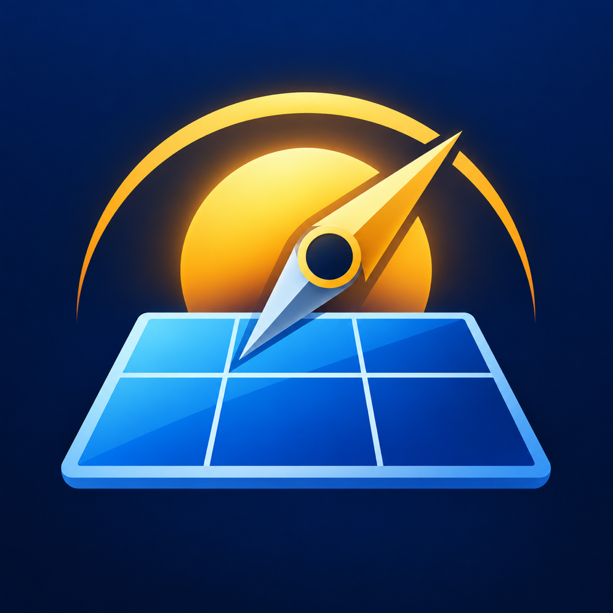
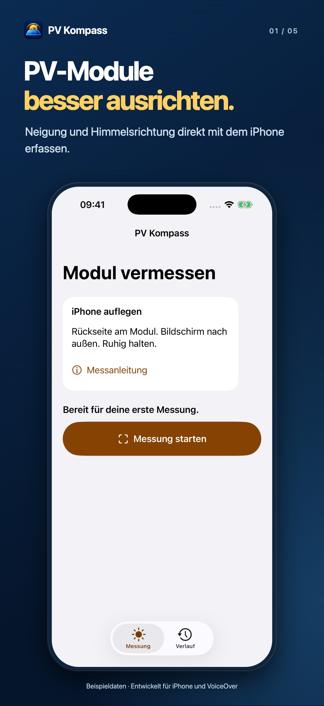
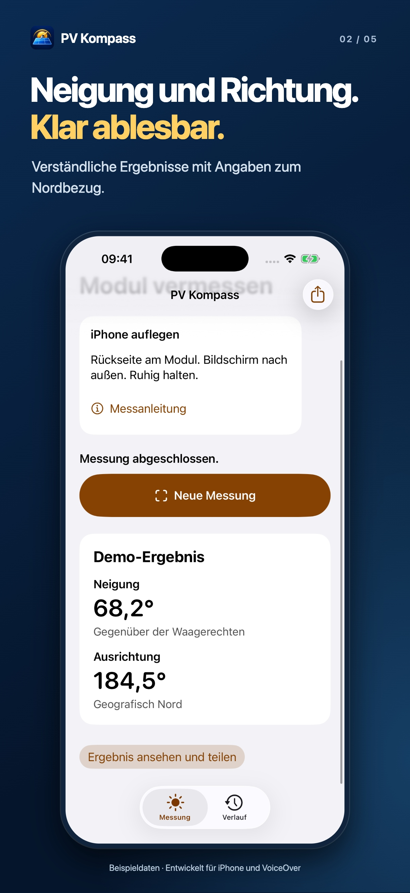
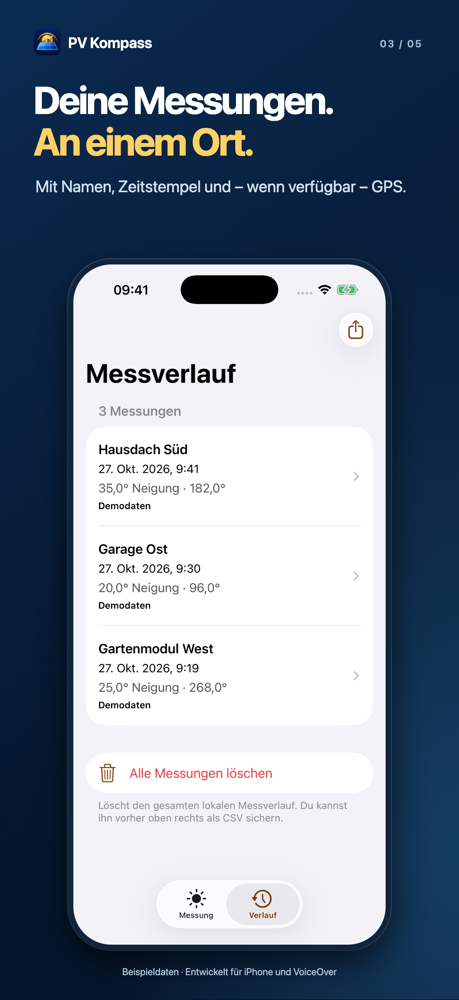
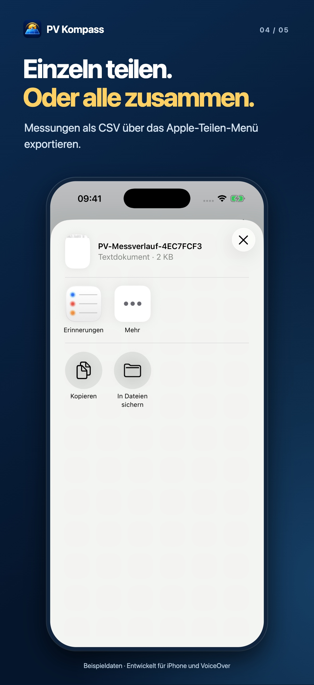
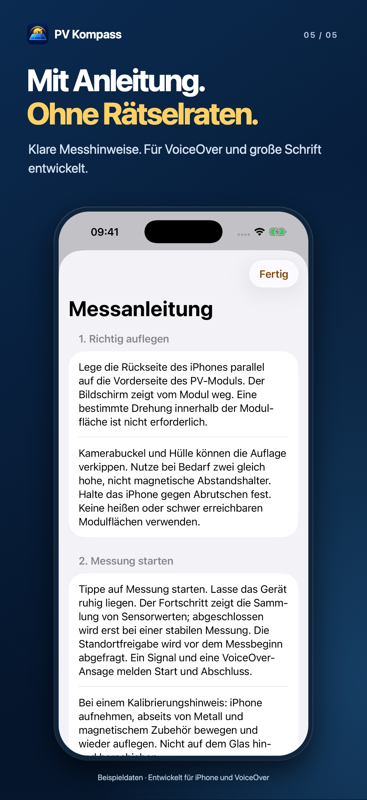

PV Kompass: Veröffentlichung vorbereitet
Neues App-Icon und fünf Screenshot-Motive. Es wurde nichts veröffentlicht oder in App Store Connect hochgeladen.
App-Icon

Auf dunkelblauem Hintergrund liegt ein blaues Solarmodul. Darüber stehen eine goldene Sonne und eine diagonal nach rechts oben gerichtete Kompassnadel. Das Icon enthält keinen Text.
Icon: 1024 × 1024 Pixel, PNG ohne Transparenz
Screenshot-Satz
Echte Ansichten der App mit gekennzeichneten Beispieldaten. Keine privaten GPS-Daten. Beide Fassungen sind für iPhone; die App unterstützt kein iPad.

1. PV-Module besser ausrichten.
Neigung und Himmelsrichtung direkt mit dem iPhone erfassen.
Bildinhalt: Messscreen mit Anleitung zum Auflegen und der Schaltfläche Messung starten.

2. Neigung und Richtung. Klar ablesbar.
Verständliche Ergebnisse mit Angaben zum Nordbezug.
Bildinhalt: Abgeschlossene Demo-Messung mit Neigung und geografischer Ausrichtung.

3. Deine Messungen. An einem Ort.
Mit Namen, Zeitstempel und – wenn verfügbar – GPS.
Bildinhalt: Messverlauf mit benannten Beispielmessungen, Gesamtexport und Alle-Löschen.

4. Einzeln teilen. Oder alle zusammen.
Messungen als CSV über das Apple-Teilen-Menü exportieren.
Bildinhalt: Natives Apple-Teilen-Menü für den CSV-Gesamtexport.

5. Mit Anleitung. Ohne Rätselraten.
Klare Messhinweise. Für VoiceOver und große Schrift entwickelt.
Bildinhalt: Messanleitung mit Hinweisen zur Auflage, zum Start und zur Kalibrierung.
Einordnung
Die Store-Texte versprechen keine garantierte Messgenauigkeit. Stimme und reale Sensorgenauigkeit werden durch diese Bilder nicht geprüft. Die Hinweise auf magnetische Störungen bleiben Bestandteil der App.